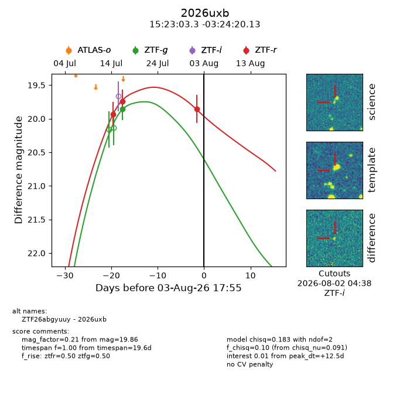
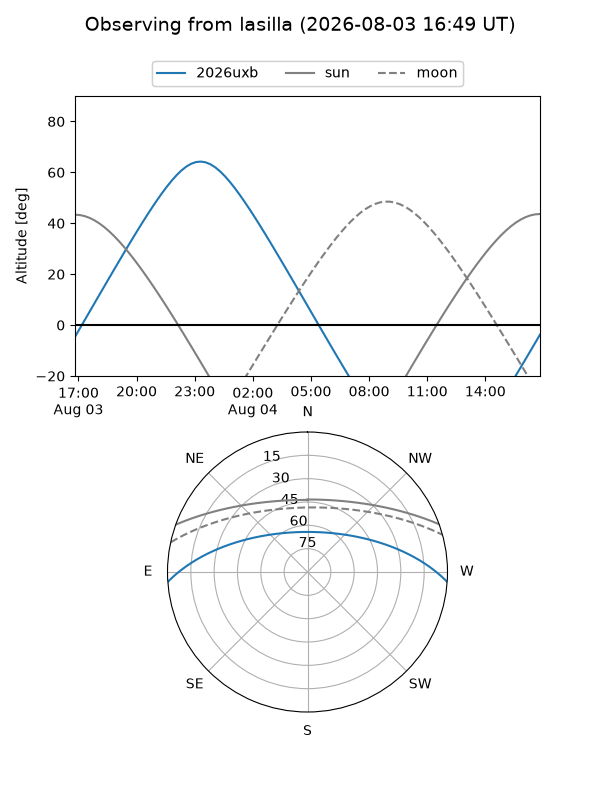
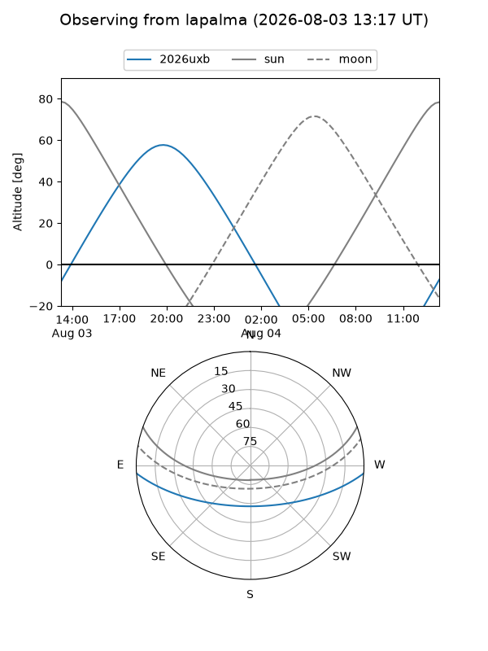
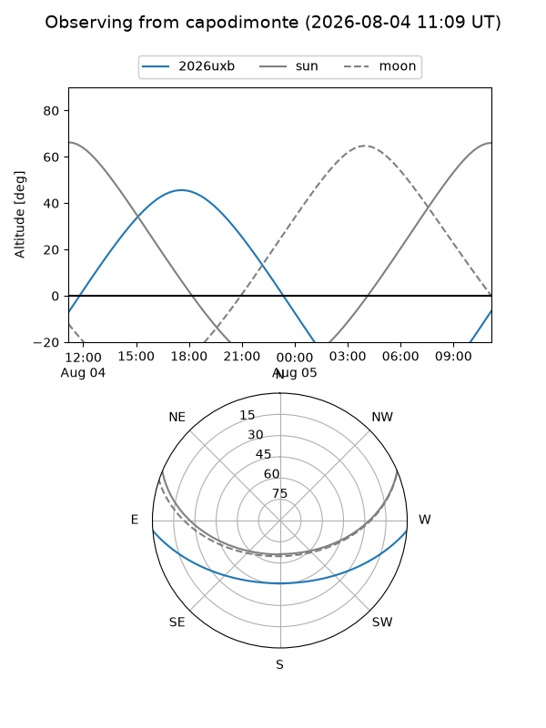
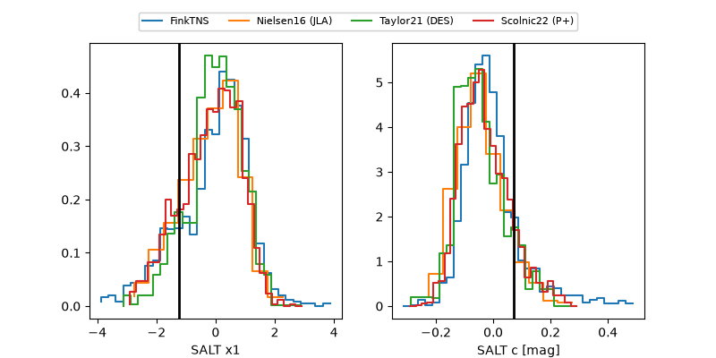

2026uxb
Target 2026uxb at 2026-08-04 05:48
Aliases and brokers:
FINK-ZTF: ztf.fink-portal.org/ZTF26abgyuuy
Lasair-ZTF: lasair-ztf.lsst.ac.uk/objects/ZTF26abgyuuy
ALeRCE-ZTF: alerce.online/object/ZTF26abgyuuy
YSE-PZ: ziggy.ucolick.org/yse/transient_detail/2026uxb
TNS name: wis-tns.org/object/2026uxb
Direct TNS query: direct search
alt names
ZTF26abgyuuy (ztf,fink_ztf)
2026uxb (tns,yse)
Coordinates:
equatorial (ra, dec) = 230.7638,-3.40559
equatorial (HMS+DMS) = 15:23:03.30,-03:24:20.13
galactic (l, b) = (359.0365,+42.36934)
Flags:
TNS type: nan
peak dt: +13.0
Photometry:
last ztfg=19.85, ztfr=19.86
1 ztfg, 3 ztfr detections
Lightcurve

Visibility



Additional plots
